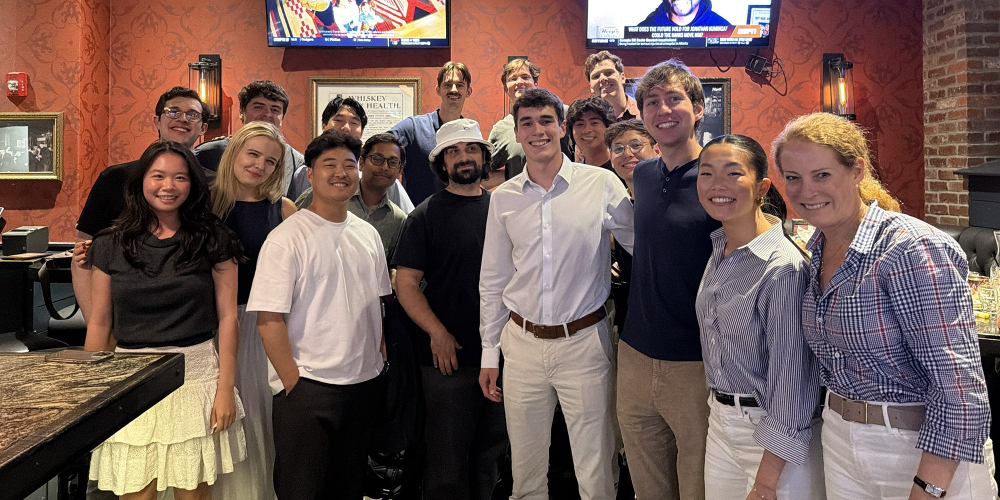

May 2026 – Aug 2026 · New York, NY
SuperDial
SuperDial is a healthcare AI startup whose LLM voice agents automate phone calls between providers and insurers for revenue cycle management.
- Role
- Agent Operations Intern
- Focus
- AI call logic, quality, delivery
- Tools
- Python, SQL, LLMs
What I did
- Owned ~$3M ARR of customer operations end to end. For every customer I was assigned, I was the main owner of the five core operating metrics: quality, delivery, inputs, phone numbers, and call scripting.
- Managed success rates across my customer portfolio, digging into failed calls to find root causes instead of patching individual cases.
- Served as a main point of contact for 400+ offshore callers, auditors, and team leads, and helped the team leads take over batch management and quality-control assignment.
- Built Python/SQL operations tooling, including an automated LLM QA system, customer dashboards, and portal UI updates.
- Investigated AI agent behavior and supported quality initiatives on other high-priority customers.
Results
- Success rate up 13.2 points (79.1% → 92.3%) for a key customer, May to July.
I found a widespread member ID formatting issue with one major insurer that caused about half of all failures and touched roughly 10% of calls. I pushed for input validation, which alone added about 9 points. I also rebuilt the customer’s AI call script with better network-status verification and customer-specific instructions to raise AI completion and quality and cut turnaround time. - Incorrect-input rate cut from 26.1% to 11.0% for a second customer.
I traced a wide range of input and routing failures across payers, including plan misrouting that caused member ID failures, missing fax numbers, PO box address errors, missing provider and claim numbers, misformatted Medicare provider IDs, and billing-name mismatches. Alongside the rest of the team, this lifted the customer’s success rate from 64.6% to 77.6% and unlocked more volume: 83K calls in July, up from 63K in May.
Tools I built
- Weekly update Slack bot: posts each customer’s results and a detailed breakdown of failures from the past week to that customer’s internal channel, which set the direction for the next week’s improvement work.
- Do-not-call list: filters out dead, spam, and wrong-entity phone lines to cut phone failures across every customer.
- Daily audit queue: automates the morning audit sheet so audits no longer have to be assigned by hand.
- Payer-specific fixes: custom phone-menu instructions and workarounds for difficult insurers, such as an automated-menu bypass for one major insurer and mapping another payer’s AI phone agent.
- Portal updates: pull requests that improved the internal quality-management portal for the operations team.
